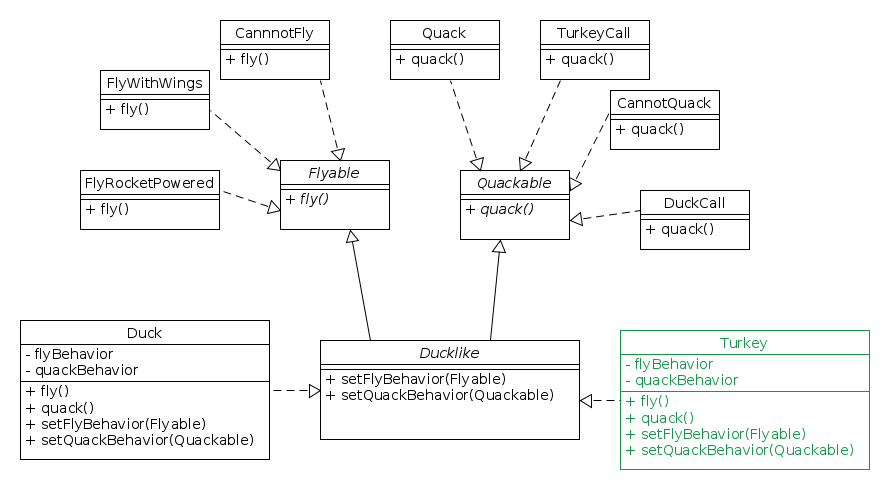
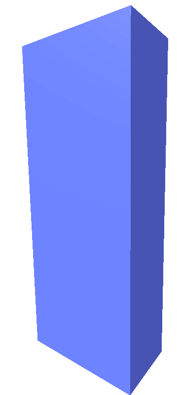
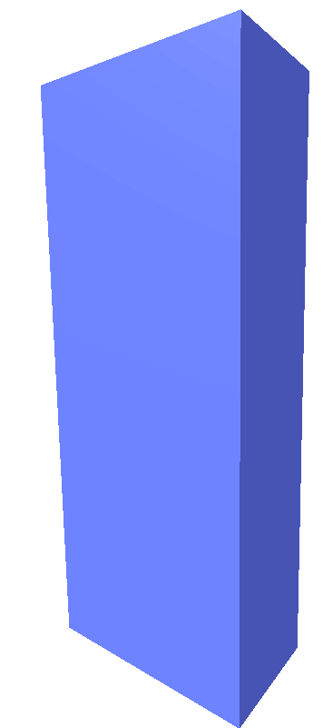
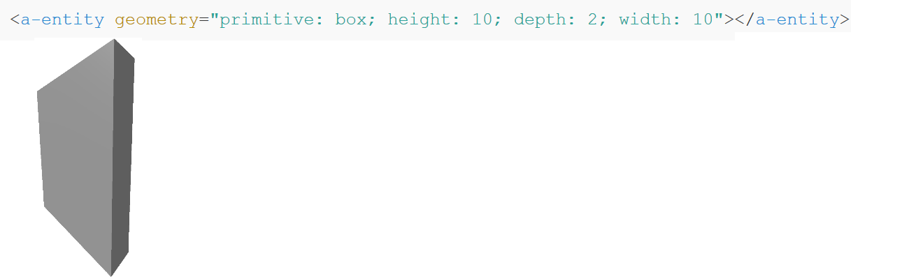

A-FRAME: VR im Web
Überblick
- VR
- A-FRAME
- Software demo
VR
Was ist VR?
- computergenerierte, interaktive Umwelt
- Nutzer kann künstliche Umwelt wahrnehmen und interagieren
- Hohe Immersion
VR-Headsets
2 gekrümmte Linsen die einen Bildschirm vergrößern und verzerren
→ beide Augen erhalten unterschiedliche Bilder
VR

VR
Produkte
A-FRAME
 A-FRAME (MozillaVR)
A-FRAME (MozillaVR)
OpenSource Web-Framework für VR
- Version 0.4.0
- Desktop und Mobile
- mit/ohne VR-Brille
- mit Motiontracking (funktionsfähig für Vive und Oculus)
- starker Community-Einbezug
nutzt HTML und Entity-Component-System
Szenen können mittels DOM bearbeitet werden
A-FRAME
Technik
A-Frame basiert auf THREE.jsTHREE.js: JS-API für 3D-Objekte im Web - basiert auf WebGL
A-FRAME erweitert THREE.js um das Entity-Component-System
→ einfache, schnelle Nutzung
→ gut über DOM nutzbar
→ HTML sehr geringe Schwierigkeit
A-FRAME
A-FRAME's: Entity-Component-System
basiert aufEntity-Component-System Design-Pattern (ECS-Pattern)
- häufig genutzt in Spieleindustrie
- hohe Flexibilität
→Prinzip: Entities und Components
A-FRAME
Entity
- jedes existierende Objekt ist ein Entity
- Verhalten: durch Components bestimmt
- hält beliebig viele Components
Component
- definiert Verhalten
- existiert nur als "Attribut" von Entities

A-FRRAME
System
- fungiert global
- behandelt Events, führt definiertes Verhalten durch, Kollisionsabfrage, etc.
A-FRAME
ECS: Nutzen
- Verhalten von Entities kann während der Laufzeit verändert werden (Components hinzufügen/entfernen)
- komplexe Entities erzeugt durch viele wiederverwendbare Components
- Components sind gut zu teilen (A-FRAME ist sehr community orientiert)
starre Struktur der Vererbung wächst je mehr Verhalten definiert werden muss
→entfällt!
Basiert auf "Composition over Inheritance" - Prinzip.
A-FRAME
Composition over Inheritance
Prinzip aus der OOPZiel
- Klassen sollen polymorphisches Verhalten besitzen
- Code Wiederverwendung
- Klassen definieren ihr Verhalten durch Objekte, von anderen Klassen erzeugt, die sie halten (Composition)
- jene Objekte ("Components") bestimmen das Verhalten
Alternative
Verhalten durch Vererbung definieren (Inheritance)A-FRAME
Inheritance Beispiel:
A-FRAME
Composition over Inheritance Beispiel:
A-FRAME
Composition over Inheritance
Vorteile
- Entity erweitern - keine neue Vererbungshierarchie erzeugen müssen
- Verhaltensmuster definieren - alle Entities können sie nutzen
A-FRAME:Konzepte
Scene
Objekte werden erst innerhalb einer Szene (klassischer 3D-Raum) sichtbar
- Scene ist ein Entity
- Scene hält Entities
- Fortbewegen über Maus+Tastatur oder VR-Headset
A-FRAME:Konzepte
Entities
- dargestelt durch HTML-Tag
- Platzhalter Objekt
<a-entity>simpelstes Entity- Position, Rotation und Scale werden immer gehalten
Eigenschaften und Methoden lesen erfolgt über DOM
Entity
<a-entity id="mario"></a-entity>
DOM
var el = document.querySelector('#mario');
A-FRAME:Konzepte
Primitives (Primitive Entities)
vordefinierte Entities mit Components und Default Werten
<a-box>
<a-circle>
<a-plane>
<a-sphere>
<a-camera>
<a-cursor>
<a-image>
<a-sound>
<a-video>
Entities können auch selber definiert werden
A-FRAME: Konzepte

<a-box> beschreibt das Ursprungs-Entity bereits in Geometrie
geometry="primitive: box;"
A-FRAME: Konzepte
Components
verleihen Entities Eigenschaftenhinzufügen über HTML-Attribute
 

Dynamisch einbinden über JavaScript möglich
A-FRAME: Konzepte
<a-entity>.components
Components hängen dem Entity an
→Zugriff möglich auf Eigenschaften und Methoden der Components
Material-Object aulesen
var material = document.querySelector('a-entity[material]').components.material.material;
Methode des Component: Sound aufrufen
document.querySelector('a-entity[sound]').components.sound.pause();
A-FRAME: Konzept
Single-Property Component
definieren nur 1 Wert - sehen aus wie HTML-Attribute<a-entity position="1 2 3"></a-entity>
Multi-Property Component
beinhalten mehrere Key-Value Paare - sehen aus wie Inline-CSS-Style<a-entity light="type: point; color: crimson"></a-entity>
können beliebig im Entity kombiniert werden um den gewünschten Effekt zu erzeugen
A-FRAME: Konzepte
Components Auswahl
- Position
position="3 2 5"(x,y,z) - Rotation
rotation="90 0 45"(x,y,z) - Color
color="#FFFFFF" - Scale
scale="0.5 1 2"(x,y,z) - Geometry
geometry="primitive: box" - Camera
camera="userHeight: 1.6" - Cursor
cursor="fuse: true; fuseTimeout: 500" - Material
material="shader: ocean; color: blue; wave-height: 10" - Visibility
visible="false"
A-FRAME: Konzepte
Entities - dynamisch manipulieren
Methoden
getAttribute(attr) Attribut eines Components einer Entity lesen
A-FRAME: Konzepte
setAttribute(attr) Component einer Entity zuweisen

removeAttribute(attr) Component entfernen
Event-Listener können ebenso eingesetzt werden bspw. können Entities auf Änderungen ihrer Components eingehen oder reagieren auf neu angehängte Components
A-FRAME: Konzepte
Asset-Management-System
lädt Assets (Media-Dateien) in einem abgegrenzten Bereichhält sie im Cache
-> preloaden der Daten
Vorteile
- verhindert das Fehlen von Assets
- -> Szene wird erst mit allen geladenen Assets geladen
- verbessert Performance
- -> Szene lädt keine Assets während des Renderns
Best Practice
<a-assets></a-assets> als erstes Child der Scene definieren
A-FRAME: Konzepte
Beispiel
Asset in Entity einbinden als Component
A-FRAME: Konzepte
Vordefinierte Asset-Elemente
<a-asset-item> - Gemischtes. z.B. 3D-Objekte<audio> - Audio Dateien<img> - Bilder (Texturen)<video> - Video (Texturen)<a-mixin> - folgt
A-FRAME: Konzepte
Mixins
- fasst Components zusammen zu einer Component
- gut zur Wiederverwendung
- Einbinden über Asset-Management-System mittels
<a-mixin></a-mixin>
→ Entities die dies Mixin einbinden erhalten die Eigenschaften der Mixin-Components
A-FRAME: Konzepte
Beispiel
übernimmt Components-Eigenschaften von
red und cube (in der Reihenfolge)
A-FRAME: Konzepte
Entity ohne Mixin geschrieben
A-FRAME: Konzepte
Eigenschaften von Multi-Properties mischen sich im Entity wenn sie von mehreren Mixins definiert werden
A-FRAME: Konzepte
Resultat
A-FRAME: Konzepte
Reihenfolge beim einbinden der Mixins beachten

Erst Components (links nach rechts), dann das Entity
A-FRAME: Konzepte
A-FRAME: Konzepte
Component selbst definieren
// Registering component in foo-component.js
AFRAME.registerComponent('ente', {
schema: {},
init: function () {},
update: function () {},
tick: function () {},
remove: function () {},
pause: function () {},
play: function () {}
});
Anwenden:
< a-scene >
<a-entity ente></a-entity>
</a-scene>
A-FRAME: Konzepte
Schema
- Definiert properties für Component
- key: ist name der Property
- value: definieren type und mögliche Werte
AFRAME.registerComponent('bar', {
schema: {
color: {default: '#FFF'},
size: {type: 'int', default: 5}
}
}
Anwendung:
< a-scene >
<a-entity foo="color: red; size: 20"></a-entity>
</a-scene>